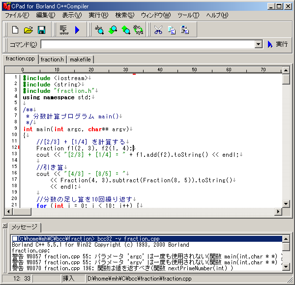

Index
概要
CPad は C/C++, Java, Fortran, Pascel, C# のプログラミングを支援する、
GUI開発環境です。
簡単に「コンパイル」＆「実行」ができるので、プログラミング初心者の学習用途はもちろん、
ちょっとしたテストコードの実行に手間をかけたくない中上級者にとっても有用なツールとなっています。
BCC版CPadのスクリーンショット

対応コンパイラ
現在、以下の CPad を公開しています。(CPad Suite)
- C/C++開発環境 CPad for Borland C++Compiler (以下 BCPad または BCC版)
Borland社のC++コンパイラ「Borland C++ Compiler」に対応します。
「Borland C++ Builder」付属のコンパイラを使用することもできます。
- Java開発環境 CPad for Java2 SDK (以下 JCPad または Java版)
Sun Microsystems社の「Java2 SDK Standard Edition」に対応します。
- C言語開発環境 CPad for LSI C-86 (以下 LCPad または LSIC版)
LSI Japan社提供のCコンパイラ「LSI C-86 試食版」に対応します。
- Fortran開発環境 CPad for Salford FTN77 (以下 FCPad)
英Salford Software社の「Salford FTN77 Personal Edition」に対応します。
- Pascal開発環境 CPad for Free Pascal (以下 PCPad)
フリーのObject Pascalコンパイラ「Free Pascal Compiler」に対応します。
また、Borland社の「Borland Delphi」付属のコンパイラを使用することもできます。
- C#開発環境 CPad for C# .NET (以下 C#版 または SCCPad)
Microsoft社の「.NET Framework SDK」に含まれるC#コンパイラに対応します。
カスタマイズ可能な仕様になっているため、上記以外のコンパイラにも設定により対応することができます。
例）Visual C++, GNU Fortran等でも動作したようです。
特長
- 使いやすいGUI環境
GUI環境のため、コマンドラインを意識せずにコンパイル、実行が可能です。
- コンパイル環境の自動構築
コンパイル時にパス・環境変数を設定してからコンパイラを起動します。
autoexec.bat 等のシステムファイルを書き換える必要がありません。
- 設定ファイル自動設定
[BCC版/LSIC版のみ]
コンパイラの設定ファイルをインストール環境に合わせて自動で設定します。
- 見やすい構文強調表示
ソースコード中の文字列、コメント、各言語キーワードをカラーで表示します。キーワードはカスタマイズできます。
- エラーを表示するメッセージウィンドウ
ダブルクリックでエラー行へジャンプできます。
標準のコンパイラ出力の他、make/ant等コンパイル支援ツールやその他ツールの出力を取り込むことができます。
- 柔軟な実行時ウィンドウ制御
実行時にコマンドプロンプトの開閉を制御できます。
標準では "Press any key to exit" と表示して停止します。
ウィンドウが閉じないので実行結果を確認でき、確認後はキーひとつでウィンドウを閉じることができます。
- 自動バックアップ
自動的に10世代前までのバックアップを取ります。
- 文字コード自動判別
Shift-JIS/EUC-JP/JIS等の日本語文字コードを自動判別して開きます。UNIX上で作成したファイルも直接編集できます。
- LSI C-86 マニュアルビューア
[BCC版/LSIC版のみ]
テキスト版のLSI C-86 付属のユーザーズマニュアルを見やすくするビューアが付属します。ハイパーリンク・検索機能などがあります。
フリー版の Borland C++ Compiler には日本語のライブラリヘルプが付属していませんが、標準Cライブラリに関してはこのマニュアルビューアで代用することができます。
- Turbo Debugger 起動
[BCC版のみ]
Borland社提供のデバッガ Borland Turbo Debugger をメニューから起動できます。
- 任意コマンド実行機能
任意コマンドを任意ディレクトリで実行できる「コマンドバー」を搭載。これにより各種支援ツールの使用、及び連携を妨げない柔軟な環境になっています。
出力結果を取り込むこともできます。
対応環境
Windows 95/98/ME/NT4.0/2000
※使用するコンパイラによっては特定環境で動作しない場合があります。
Index